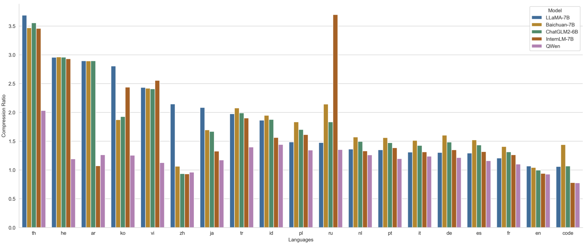

Qwen — 通义千问开放权重主线起点

一页判断
| 维度 | 初代 Qwen 的做法 | 对后续主线的意义 |
|---|---|---|
| 模型族 | 7B / 14B / 72B，Base 与 Chat 并行 | 建立“开放基座 + 对话模型”的发布范式 |
| 预训练 | 72B 版本使用约 3T tokens，中英为主并覆盖代码、数学等数据 | 把知识、中文能力与代码能力放进同一个通用基座 |
| 上下文 | 通过 RoPE/NTK-aware 等工程扩展支持更长上下文 | 为 Qwen2 以后 128K 主线积累经验 |
| Agent | Qwen-Chat 支持 function calling，官方同步维护 Qwen-Agent | 工具使用不是后来的外挂，而是早期产品目标 |
架构与训练
Qwen 是 decoder-only Transformer，采用 RMSNorm、SwiGLU、RoPE 和自研 tokenizer。官方模型卡给出的 tokenizer 可覆盖超过 15 万 token，目的不是追求“词表越大越好”，而是降低中文、多语言、代码和数字文本的切分损耗。

72B 版本的公开报告披露了约 3T tokens 的预训练规模。数据配比与清洗细节没有完全公开，因此这里不把“3T”直接等价成训练质量；更重要的事实是 Base 与 Chat 同时交付，后训练从一开始就承担 instruction following、安全和工具调用，而不只是聊天语气微调。
从语言模型到工具模型
Qwen-Chat 的 function calling 与官方 Qwen-Agent 框架，使这一代已经能把自然语言请求翻译为结构化工具参数。它仍依赖提示模板、工具描述和外部执行器，离今天的长程自主 Agent 很远，但训练接口上已经出现三个关键对象：工具 schema、调用轨迹和环境回传。
资料充分度与能力边界
- 初代报告主要围绕静态知识、语言、代码和数学评测，不能据此推断长程 Agent 稳定性。
- 公开材料没有给出完整数据配方、RLHF 数据规模和工具轨迹构造细节。
- Qwen-VL、Qwen-Audio 是同代支线，不混入通用文本正代结论。
一手资料
- Qwen 官方仓库
- Qwen Technical Report
- Qwen-72B Hugging Face model card
- 本地 Hugging Face 模型卡 MD
- 本地来源索引